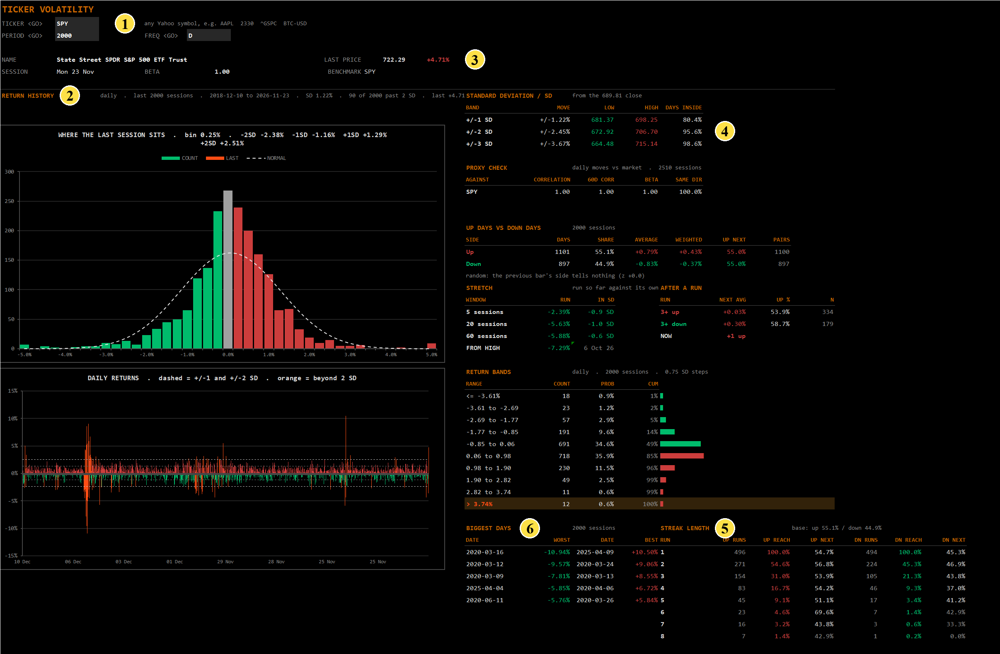
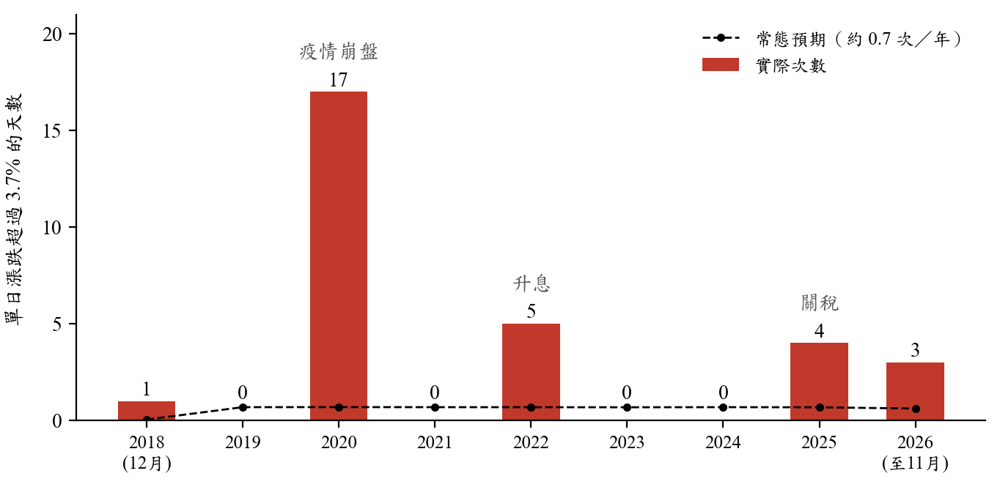
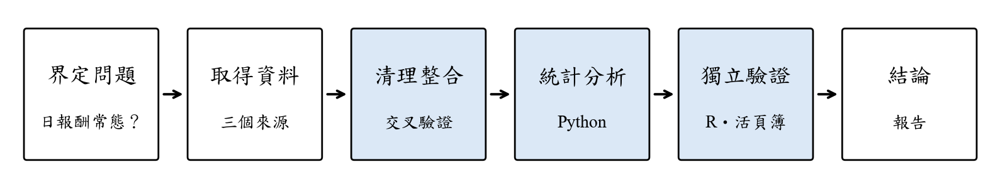

1專題摘要
股票、ETF 在二級市場每天漲跌，一般投資人卻難以判斷「跌 2% 算不算多」「連漲三天該不該追」。
本組開發 Excel 活頁簿 Ticker Volatility：輸入代號即自動取得 Yahoo 價格，只用平均、標準差、比例，在一頁回答這些問題，並以實際次數取代課本機率。以 SPY 驗證：近 2,000 日超出 3 個標準差的日子是常態預期的 5.6 倍，僅佔 1.5% 天數卻貢獻 37% 的波動；連漲連跌則與擲銅板無異。限制：只分析 SPY；活頁簿依賴 Yahoo 非官方介面，需 Windows 版 Excel 與網路。
使用者
沒有程式與統計背景的一般投資人與同學
痛點
只有模糊的「波動感」，不知道漲跌算不算異常
方法
Excel VBA 產品＋Python 分析＋R 獨立驗算
2成員與分工
每位成員負責至少一項可查核產出，並審查另一位成員的成果。
3作品展示
固定示例：一般投資人怎麼讀這一頁
下圖是活頁簿輸入 SPY、期間 2,000 日的畫面，黃色編號對應下面六種讀法。

- 輸入：只填代號、期間與頻率，其餘自動完成。
- 平常一天動多少：標準差 1.22%，SPY 一般的一天漲跌約 1.2%，以 722 美元計約 9 美元。
- 今天算不算異常：最後一日 +4.71%，將近 4 個標準差，屬於 2,000 天裡最極端的 1.5%。
- 價格落在哪、能信多少：±1／2／3 個標準差內，實際有 80.4%、95.6%、98.6% 的日子，和課本的 68.3%、95.4%、99.7% 不同：平常比課本平靜，極端比課本多。
- 漲了幾天還會再漲嗎：見下方連漲連跌表。
- 最極端有多極端：最大跌幅 −10.94%（2020-03-16）、最大漲幅 +10.50%（2025-04-09），約 9 個標準差。
亮點：連漲連跌和擲銅板一樣
SPY 有 55.1% 的日子上漲。如果漲跌像擲一枚「55% 出現正面」的銅板，連漲到 n 天的比例應是 0.551 的 n−1 次方。活頁簿算出的實際比例幾乎一樣：連漲幾天不代表會繼續漲，連跌幾天也不代表該反彈。
| 連續天數 | 連漲到 n 天 | 擲銅板預期 | 隔天再漲 | 連跌到 n 天 | 擲銅板預期 | 隔天再跌 |
|---|---|---|---|---|---|---|
| 2 | 54.6% | 55.0% | 56.8% | 45.3% | 44.8% | 46.9% |
| 3 | 31.0% | 30.3% | 53.9% | 21.3% | 20.1% | 43.8% |
| 4 | 16.7% | 16.7% | 54.2% | 9.3% | 9.0% | 37.0% |
| 5 | 9.1% | 9.2% | 51.1% | 3.4% | 4.0% | 41.2% |
研究：課本的 ±3 個標準差會低估極端日
照常態分布，單日漲跌超過 3 個標準差一年只該出現 0.7 次。SPY 近 2,000 日實際有 30 天（常態預期 5.4 天），而且集中在 2020 疫情、2022 升息、2025 關稅這幾年。

超出 3 SD 的天數是常態預期的倍數（2,000 日）
只佔 1.5% 的極端日貢獻的總波動（常態下約 2.9%）
樣本外驗證中常態低估 3 SD 極端日的倍數
自己操作
- 需 Windows 版 Excel，並在信任中心勾選「信任存取 VBA 專案物件模型」。
- 建置活頁簿：
powershell -STA -File product\build.ps1 -OutPath "Ticker Volatility.xlsm" - 開啟活頁簿、啟用巨集，在 B2 輸入代號（SPY、AAPL、2330 皆可），B3 輸入期間，E3 選 D／W／M。需連網。
- 每次抓取資料都會記錄在隱藏工作表 Manifest（時間、筆數、起訖日、SHA-256），分頁按右鍵「取消隱藏」即可查看。
測試摘要
Python 單元測試通過
R 獨立重算統計量一致
活頁簿實際執行與 Python 重算對帳一致
測試項目與證據見 docs/test_plan.md、r_check_SPY.csv、活頁簿對帳紀錄。
4報告與媒體
- 書面報告：Report.pdf（Word 版）
- 簡報（PPTX／PDF）：待補
- 影片雲端連結：待補（以觀看權限連結提供）
- 字幕或文字稿：待補
5程式與資料
- GitHub：github.com/Playboy769/statPresentation
- 交件版本與 commit：待交件時填入
- 專案說明與重現步驟：README.md
- 資料字典與整合紀錄：docs/data_dictionary.md
- 資料下載紀錄（時間、SHA-256）：data/manifest.json
| 資料 | 提供者 | 授權 |
|---|---|---|
| SPY 日收盤價（含息調整） | Yahoo Finance | 不重新散布；repo 只附取得程式 |
| S&P 500 指數 | FRED | 公開，標示來源 |
| VIX（VIXCLS） | FRED／CBOE | 公開，標示來源 |
重建全部結果：
python python/run_all.py Rscript r/verify.R SPY python -m unittest discover -s python/tests
6合作歷程
| 日期 | 方式 | 討論內容與決議 | 負責人 |
|---|---|---|---|
| ＿＿ | ＿＿ | 待補會議紀錄 | ＿＿ |
版本變化與重要決策：
- 決策紀錄 decisions.md（例：標的由 2330 改為 SPY、價格改用含息調整價）
- 除錯紀錄 debug_log.md
- 版本歷程 vibe_coding_log.md
7AI 協作
工具：Claude Code（Claude Opus 5.5），2026-11-23 至 11-24，用於釐清問題、撰寫程式與文件、執行測試；未使用付費 API。

- AI workflow 與流程：docs/ai_workflow.md
- AI 使用揭露、主要提示與修改理由：docs/ai_disclosure.md
- 技能文件：return-distribution-check/SKILL.md
- Vibe Coding 歷程：docs/vibe_coding_log.md
- 公開對話紀錄（去識別化 HTML／PDF）：待補
8公開與引用
引用來源
- Bollerslev, T. (1986). Generalized autoregressive conditional heteroskedasticity. Journal of Econometrics, 31(3), 307–327.
- Cont, R. (2001). Empirical properties of asset returns: Stylized facts and statistical issues. Quantitative Finance, 1(2), 223–236.
- Engle, R. F. (1982). Autoregressive conditional heteroscedasticity with estimates of the variance of United Kingdom inflation. Econometrica, 50(4), 987–1007.
- Fama, E. F. (1965). The behavior of stock-market prices. The Journal of Business, 38(1), 34–105.
- Mandelbrot, B. (1963). The variation of certain speculative prices. The Journal of Business, 36(4), 394–419.
- 資料：Yahoo Finance；Federal Reserve Bank of St. Louis, FRED（SP500、VIXCLS）。
公開範圍與已知問題
- 公開：程式、分析結果、報告與文件。不公開：Yahoo 原始價格檔（授權限制）。
- 已知問題：活頁簿依賴 Yahoo 非官方介面，介面改版時可能無法取得資料；只分析 SPY 一檔，結論不能直接推廣到個股。
- Markdown（.md）文件在瀏覽器中以純文字顯示，於 GitHub 上閱讀排版較佳。